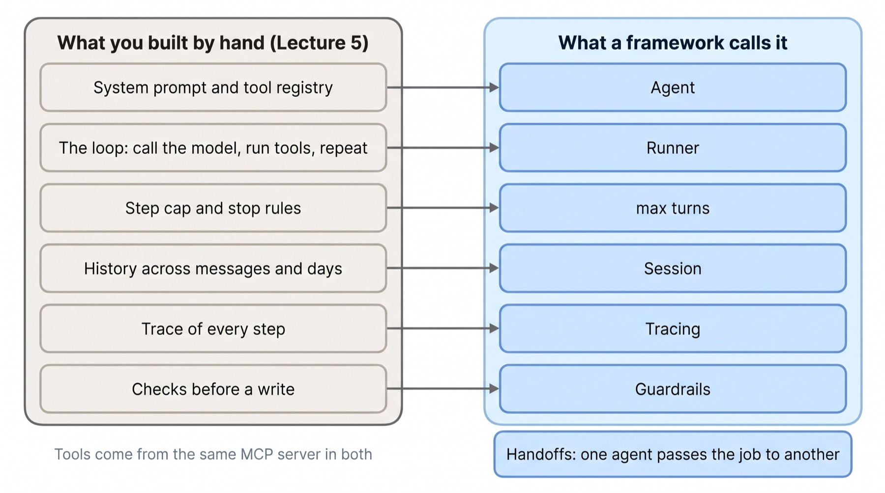
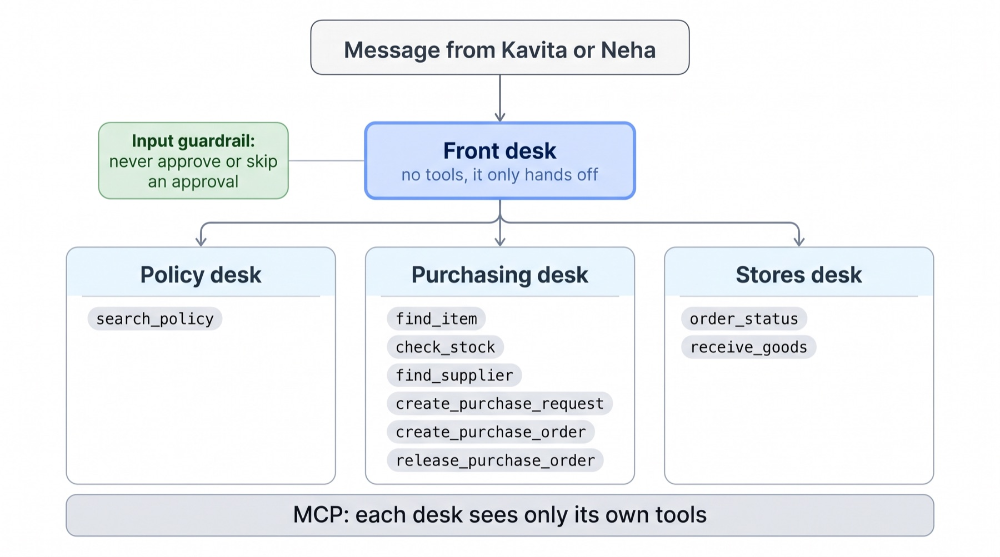
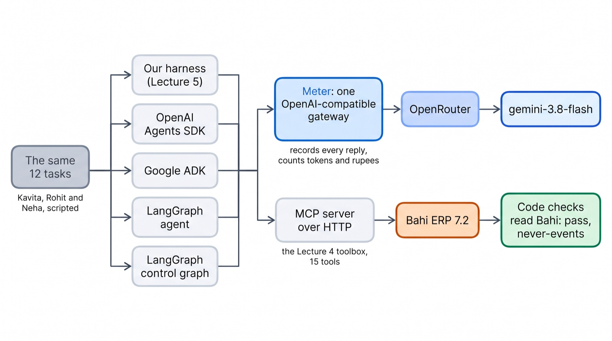
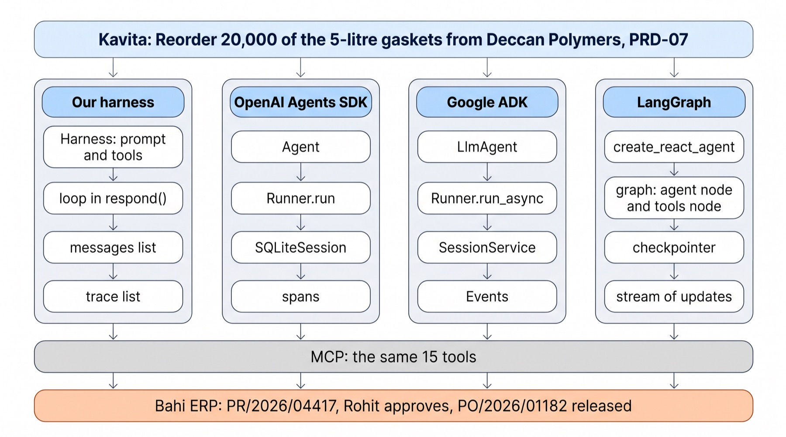
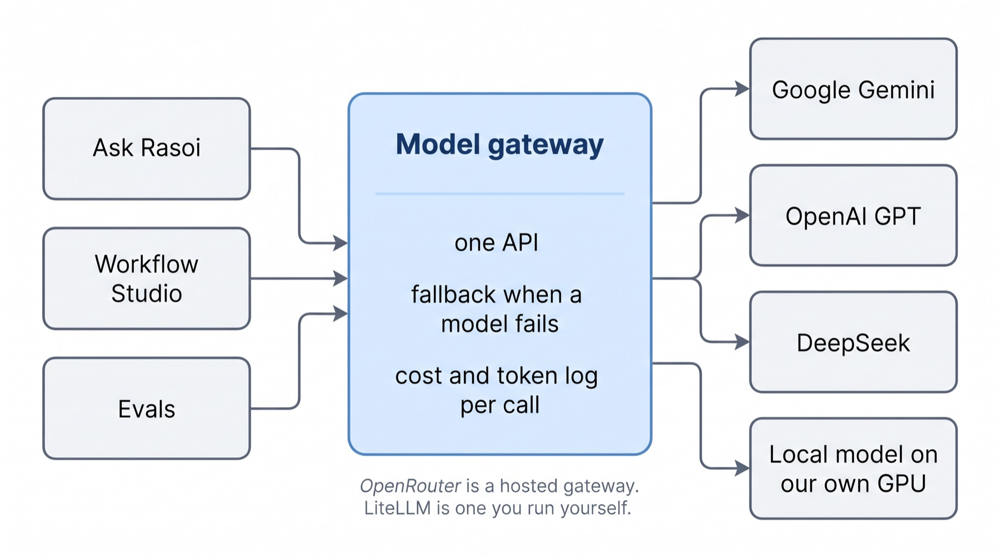
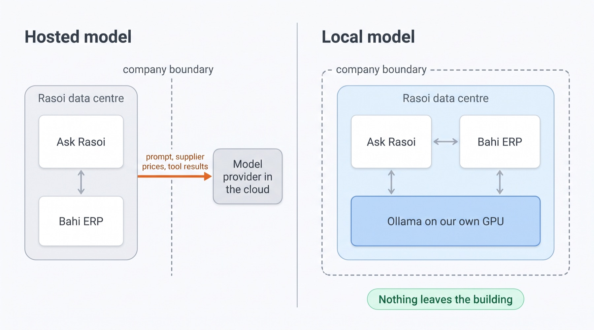
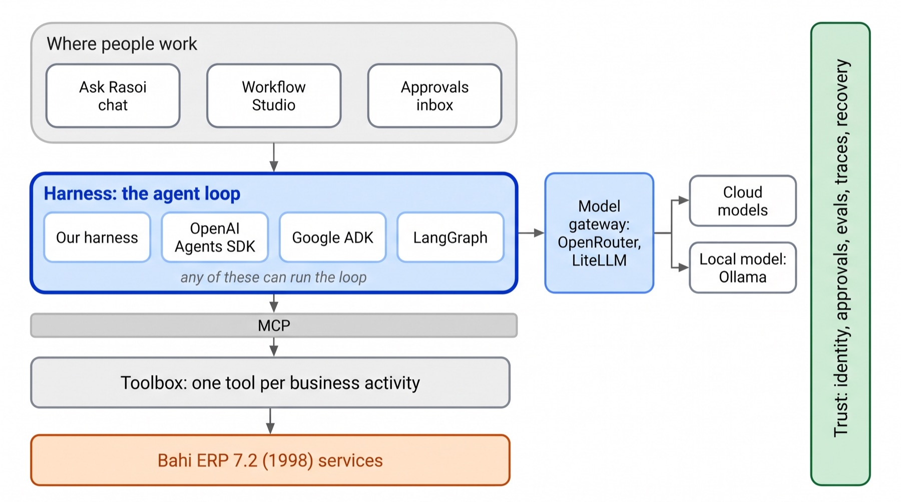

You built Ask Rasoi's loop by hand. Today the same agent runs on the frameworks companies use: the OpenAI Agents SDK, Google ADK and LangGraph, behind a model gateway, and on a model in our own building. Same tools, same model, same twelve tasks. Measured.
Dr. Rajat Dandekar · Vizuara
Lecture 7 made Ask Rasoi safe to run. Lecture 8 asks what it should run on.
Monday morning. Rasoi's IT team has read your Lecture 5 code. Their note to Anand Patil is short.
Everyone uses LangGraph, or OpenAI's Agents SDK, or Google's ADK. A home-made loop is one more thing to maintain. Rewrite Ask Rasoi on a framework.
Anand forwards it to you with one line: "Which one, and why? With numbers, not opinions."
Kavita: "Order 3,000 standard whistles from Sahyadri Valves, cost centre PRD-07, need-by 4 November." Then: "Yes, go ahead."
logs/fw_*.json.What does an agent framework give you, what does it leave to you, and which one should Rasoi run on? Measured on Rasoi's own tasks.
A library that owns the loop. You give it instructions and tools; it calls your tools.
A library you call. A framework calls you: its Runner decides when your tools run.
That is exactly what your Harness._loop did in Lecture 5. The frameworks are the same nine lines, written once and shared by thousands of teams.
harness.py, the loop and its seven parts_loop()Code lines only: no blanks, comments or docstrings. experiments/count_loc.py → logs/loc.json.
Six things you built have a name in every framework.
One more is new: a handoff, one agent passing the conversation to another.
The tools stay where they were: the Lecture 4 toolbox, served over MCP. Every framework today reads the same server.

Click a framework. Each row is one piece of Ask Rasoi.
Read a row across: the same thing, spelled four ways. You already know what each one does.
1. In the Agents SDK, which object plays the part of your for step in range(max_steps)? Reveal
Runner.run. Its max_turns is your step cap.
2. Rasoi moves to a framework. Who now enforces Purchase Policy §6.2? Reveal
Still you. A framework gives you a place to put the check (a guardrail, a callback, a graph node), not the check.
3. Why can every framework today use the same 15 tools without a line changed? Reveal
Because the toolbox is an MCP server. Each framework is an MCP client: it calls tools/list, then tools/call.
Agent, Runner, tools, sessions, tracing, handoffs, guardrails. Taught in depth, then run on the gasket order.
OpenAI's open-source Python library for agents (pip install openai-agents). Small on purpose: a handful of objects.
The problem it solves: the loop, tool calling, multi-agent handoffs and tracing, without writing them again.
Not tied to OpenAI's models. It speaks the chat-completions API, so any gateway works. We give it OpenRouter's URL; no OpenAI key anywhere today.
openai 3.x, while LiteLLM (which ADK uses) still needs openai below 3. The two cannot share one Python environment.
So the notebook pins 0.20.0, the last release that installs next to LiteLLM 1.104.2. A real cost of frameworks: their dependencies have to agree.
Found when our first image build failed: logs/probe.txt, PyPI metadata.
instructions is Lecture 5's SYSTEM_FULL, word for word.
mcp_servers is the toolbox. The Agent lists the tools itself.
An Agent does nothing on its own. It is a description; the Runner runs it.
bahi/course/frameworks/openai_agents.py. In our runs base_url pointed at the meter (Part Five), which forwards to this same OpenRouter URL.max_turns.Left: your Lecture 5 loop. Right: one call does the same.
Past the cap it raises MaxTurnsExceeded. We turn that into "(stopped after 12 steps)", as our harness does.
agents/run.py. What you lose: you can no longer put a line of your own between "the model asked" and "the tool ran", except through the hooks the SDK offers (guardrails, Part Two's end).The SDK is an MCP client. On each run it asks the server tools/list and offers those tools to the model.
When the model calls one, the SDK sends tools/call to the same server. Our tool code runs in Kavita's own Bahi session.
Two kinds of tool: @function_tool on a Python function, or every tool of an MCP server. We use MCP, so all four frameworks share one toolbox.
15 tools, discovered, not hard-coded. With cache_tools_list=True the list is fetched once per connection. Task T04, logs/fw_openai_agents.json.
The SDK talks to a Model. Two ways to reach a model that is not OpenAI's:
1. OpenAIChatCompletionsModel with any OpenAI-compatible URL: OpenRouter, a LiteLLM proxy, Ollama. We used this.
2. LitellmModel("openrouter/google/gemini-3.8-flash"), the LiteLLM route.
Either way the model is one string. Part Six shows what a gateway adds.
| Model call | Input tokens | It asked for |
|---|---|---|
| 1 | 1,682 | find_item, find_supplier, check_budget |
| 2 | 1,832 | create_purchase_request (preview) |
| 3 | 1,980 | words: the preview, and a question |
Three look-ups in one call, as in Lecture 5. Each call resends the whole history. T04, generation spans.
Every span the SDK recorded for Kavita's two messages. Drag through them.
generation = one model call. function = one tool call over MCP. mcp_tools = the tool list. agent = one Runner.run.
Message 1 ends with a preview. Message 2: save the request, order from it, release.
Lecture 5's save() / load() wrote your messages to a file. SQLiteSession does it for you: one row per item.
On day 2 a brand-new object with the same file and id sees all of day 1.
logs/desks.json
By default the SDK sends traces to OpenAI's dashboard, which needs an OpenAI key. We have none.
So we plug in our own TracingProcessor that keeps every span in memory. Lecture 10 sends the same spans to Langfuse.
transfer_to_purchasing_desk, and chooses one.Ask Rasoi as a front desk and three desks. Each desk sees only its own tools: an MCP tool filter.
Why split? Fewer tools per agent, smaller prompts, and the stores desk physically cannot raise an order.

bahi/course/frameworks/desks.py.Five messages, from Kavita and Neha. The trace says which desk took each one.
Our first run crashed on "Yes, go ahead.": the front desk tried to call create_purchase_order itself, a tool it does not have (ModelBehaviorError).
The fix: a handoff changes who owns the conversation, so the next message starts at the desk that answered last, and every desk can hand back. logs/desks_run1_error.txt
The SDK has three places to put one. Each is plain code you write; it returns "fine" or "stop".
no_self_approval, stops a message that asks Ask Rasoi to approve or skip an approval.food_grade, reads Bahi and rejects create_purchase_order for a food-contact part from a supplier with no valid certificate (§6.2).verify, is Lecture 5's verify part: a reply that calls an order released while Bahi says otherwise is sent back.Approve PR/2026/04417 yourself. logs/desks.json, message 4The twelve tasks again on the Agents SDK, with food_grade on create_purchase_order and verify on the output.
Run 1: the food-grade check ran on every order and never had to block. Run 2: the model tried once (, Kaveri Rubber's expired certificate). The guardrail rejected the call; nothing was saved.
The verify guardrail was wrong times, on : it tripped on the preview of a request.
Each false alarm cost one extra model call. No task failed, but the bill rose: against for the plain port.
1. Kavita says "Yes, go ahead." after the purchasing desk previewed her order. Which agent should get that message, and why? Reveal
The purchasing desk: it owns the conversation since the handoff. Starting at the front desk is what crashed our first run.
2. You want every model call in Langfuse instead of OpenAI's dashboard. What do you change in the agent? Reveal
Nothing in the agent. Register a different TracingProcessor (or an OpenTelemetry exporter).
3. Where would you put "no order above ₹10,00,000 without Anand"? Reveal
A tool guardrail on create_purchase_order that reads the value from Bahi: code, not a sentence in the prompt. You write it in NB8, exercise 3.
The Agent Development Kit: agents, runners and events, any model through LiteLLM.
Google's open-source framework for agents (pip install google-adk). Built first for Gemini and Google Cloud's agent platform; any model works through LiteLLM.
The problem it solves: the loop and tools, plus workflow agents that fix the order of sub-agents (Sequential, Parallel, Loop), sessions, an evaluation runner and a local web UI.
Pinned: google-adk 2.11.0, LiteLLM 1.104.2.
| ADK | What you built |
|---|---|
LlmAgent | system prompt + tools + model |
Runner.run_async | the loop; it yields Events |
Event | one step of the trace |
McpToolset | the toolbox over MCP |
SessionService | the history |
RunConfig(max_llm_calls) | the step cap |
| callbacks | where a harness part goes |
The same prompt, the same MCP server, the same model.
instruction is a function returning the prompt, because ADK fills {curly} words in a string from session state.
In production: LiteLlm(model="openrouter/google/gemini-3.8-flash"). In our run openai/… with api_base at the meter.
bahi/course/frameworks/adk.py.Kavita's whistle order, as ADK saw it. Note the second model call: it asked for the request and the order in one go.
The meter sees every request. Same prompt, same 15 tools; ADK's requests are bigger.
Its additions to the system prompt, word for word from our run:
Run 1, the same model and tools as every other port.
Agents SDK:
Agents SDK:
Agents SDK:
Agents SDK: 0.04 s. Replay, replies instant.
logs/adk_time.jsonADK's handoff is sub_agents=[...]. The front agent gets a transfer_to_agent tool and the model picks the desk.
Same three desks, same tool filters (McpToolset(tool_filter=[...])), same messages.
No input guardrail here: ADK's equivalent is a before_model_callback or a plugin. We did not port it.
1. ADK and the Agents SDK passed about the same number of tasks. Why did ADK cost more? Reveal
Each request was larger (its own prompt lines, longer tool schemas), and every model call resends the whole request. Same model, more tokens per call.
2. Rasoi wants "check stock, then raise the request, then notify Rohit" always in that order. Which ADK piece fits? Reveal
A workflow agent: SequentialAgent with three sub-agents. Or the Lecture 6 Studio. The order is fixed in code, not chosen by the model.
3. Why is ADK's instruction a lambda in our port? Reveal
A plain string is a template: words in curly braces are filled from session state. A function returns the text as it is.
You built a control graph in Lecture 5. LangGraph also ships the free loop as a graph. Measured side by side.
create_react_agent(llm, tools, prompt): node agent (the model) and node tools, with an edge back until the model answers in words. The checkpointer keeps the history per thread_id.LangGraph streams one update per node. Kavita's whistle order: agent, tools, agent, tools … agent.
The tools node runs the calls of one model turn; each result is one ToolMessage, the observation from Lecture 5.
recursion_limit = 2 × 12 + 1: two graph steps per model call, so the same cap of 12.
Both are LangGraph. Same twelve tasks.
The control graph uses the model for two small jobs, so it made a third of the model calls and a fraction of the tokens.
The price is code: lines for the graph against for the prebuilt agent. Every step of the P2P process is written down.
LangGraph is the open-source library. LangChain also sells a runtime for running LangGraph agents as a service.
It adds what you built in Lectures 5 and 7 around the graph: a database for checkpoints, a task queue for long runs, an HTTP API with streaming, endpoints to resume an interrupt (Rohit's approval), and a visual debugger.
| Platform piece | Our version |
|---|---|
| Checkpoint database | L5 save() / load(); the checkpointer |
| Interrupt and resume API | L5's pause; L7's durable wait |
| Tracing (LangSmith) | L7 traces; L10 Langfuse |
| Deployment | L7 deploy on Modal |
Seven setups, twelve tasks, two runs. The same rig under all of them.
Only the framework changes. Everything else is held fixed:

bahi/course/frameworks/meter.py.Pick a measure. Run 1 is the bar; run 2 is the dot.
One run of twelve tasks is a small sample. A one-task difference between two setups is not a result.
logs/fw_<setup>.json, fw_<setup>_rep2.json
Each square is one task on one setup. Click one to read what Kavita was told last.
pass fail never-event rate-limited, re-run
Across two runs, every free loop broke Purchase Policy §6.2 at least once: a food-contact gasket ordered from Shakti Seals (no certificate) or Kaveri Rubber (expired).
It did not matter whose loop: ours, OpenAI's, Google's or LangChain's. The model reads the rule, quotes it, and then Kavita says "go ahead".
What held: a gate in code. The control graph's certificate gate; the Agents SDK's tool guardrail.

The order enters as a message, becomes model calls in a loop, is held in some kind of history, and leaves a trace.
All four meet the same MCP server, and Bahi records the same documents.
The tool calls of Kavita's whistle order, as they reached the MCP server, in four frameworks. Drag to replay them together.
Same goal, different routes. Three previewed a request, then placed a direct order. The Agents SDK saved a purchase request and ordered from it. Bahi ended the same in all four.
Replay the recorded run: model replies arrive instantly, so what is left is the framework, MCP and Bahi.
Our harness, the Agents SDK and LangGraph add about a second or less per task. ADK adds about 12 s, almost all before the first model call.
Against that, the model itself took about a minute per task. For Rasoi the model is the bill; the framework is a rounding error, except for ADK's start-up.
1. LangGraph's agent passed 12 in run 1 and 10 in run 2. Is it worse in run 2? Reveal
No. Twelve tasks, one run each: a two-task swing is within what the same code does twice. Compare setups on many runs, and on never-events, not on one pass count.
2. Which setup would you trust with Kavita's gasket order, and why? Reveal
One with the §6.2 rule in code: the control graph, or a framework port with a tool guardrail. The free loops broke it at least once each.
3. Why count tokens at the gateway instead of trusting each framework's own usage report? Reveal
So every framework is counted the same way, and the rupees are what OpenRouter actually billed.
One API for many models. And a model that never leaves Rasoi's building.
OpenRouter: hosted, one key, one bill, hundreds of models.
LiteLLM: open source; a Python library, or a proxy server you run yourself, with keys, budgets and rate limits per team.

The same request through OpenRouter; only the model string changed.
All four got ₹2,80,840 and "above the limit" right. The cost per answer differs many times over, mostly by how many words the model writes (and thinks).
One question proves the plumbing, not the model. Choosing a model for Ask Rasoi means running the twelve tasks on it.
LiteLLM's Router: two named models; if rasoi-brain fails, use rasoi-backup.
We forced the failure with mock_testing_fallbacks=True. The backup answered.
Every prompt Ask Rasoi sends holds Rasoi's data: supplier prices, stock, people's names.
Some companies may not send that to an outside API at all, by contract, by regulation or by choice. They run an open-weight model on their own GPU.
The price: a GPU to buy or rent, and usually a weaker model.

http://localhost:11434/v1.Our harness, unchanged, with model="ollama:…". Ollama 0.40.3 on one Modal L4 GPU (24 GB). No API key in the container.
The same twelve tasks. ₹0 to OpenRouter; the cost is GPU time.
Seven frameworks, the evidence on who uses them, and the answer for Anand.
Three we ran. Four named, not run in our build.
| Framework | Reach for it when | In our build |
|---|---|---|
| OpenAI Agents SDK | you want a small API: one loop, a few agents with handoffs, guardrails and tracing built in, any model | ported, run twice; lines |
| Google ADK | you are on Gemini and Google Cloud, or want workflow agents and ADK's eval and web tools | ported, run twice; more tokens |
| LangGraph | the process must be followed: an explicit graph, checkpoints, interrupts for approvals | agent and control graph, run |
| Claude Agent SDK | the agent works on files and a shell, like Claude Code, with subagents; Claude models | named; no Anthropic key |
| CrewAI | a quick multi-agent prototype written as roles and tasks | named, not run |
| Microsoft Agent Framework | you are a .NET or Azure shop; successor to AutoGen and Semantic Kernel | named, not run |
| LlamaIndex | the agent is mostly about your documents: indexes, retrieval, document workflows | named, not run |
Tool choice changes every few months. The pieces do not: instructions, tools, the loop, history, traces, checks. Learn those and any framework is a week's reading.
Directional. Most public numbers come from vendor surveys and download counters.
Caveat: self-selected respondents; "used" is not "runs in production".
Caveat: downloads count CI machines and dependencies, not teams.
Caveat: a vendor's own survey of its audience.
Sources as collected in INDUSTRY_TOOLS_PLAN.md (28 Oct 2026): Stack Overflow 2025 survey; LangChain State of Agent Engineering; Linux Foundation; secondary download trackers.
One page, every number from our runs.
Every framework runs for real in replay, with no key: the SDK code, MCP and Bahi all execute. Only the model's replies come back from our recording.
Pinned: openai-agents 0.20.0, google-adk 2.11.0, litellm 1.104.2, langgraph 1.2.15, langchain-openai 1.7.1, langchain-mcp-adapters 0.3.2, fastmcp 3.4.11, mcp 1.30.0.
NB8_frameworks.ipynbFolderToolbox over MCP and port it.Feeds the demo-day rubric's production-stack line (10 points): a framework layer with a pinned version, a written reason, and one measured comparison against your hand-built harness. Details in A8.md.

The harness box can now be filled by any of four implementations, and the model reached through a gateway, cloud or local.
Tools, MCP and Bahi did not change at all.
Today every framework spoke MCP to the same toolbox. Next time we open MCP up: resources and prompts, remote servers with sign-in, the MCP Inspector, MCP security, and A2A, so another company's agent can hand Ask Rasoi a task.